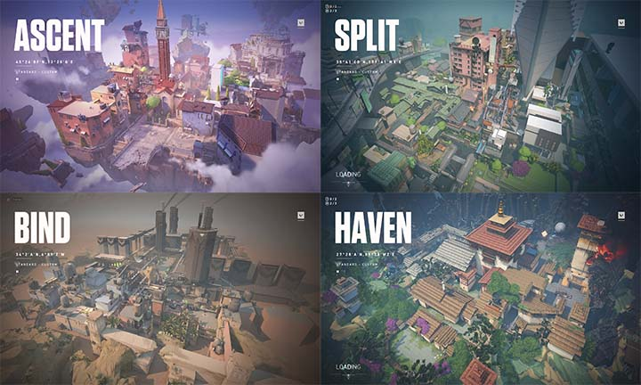
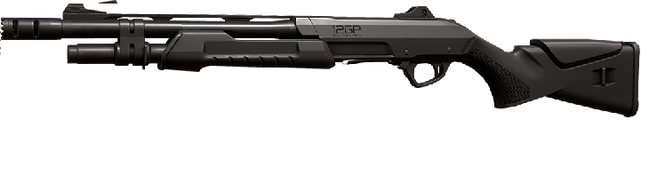
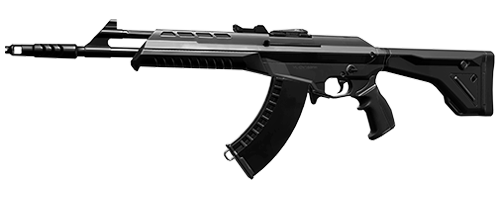
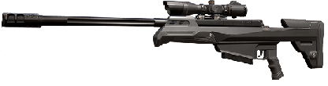
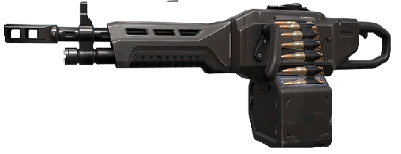

Tus Agentes
LA CREATIVIDAD ES TU MEJOR ARMA.
Más allá de las armas y las balas, podrás elegir a un agente dotado de habilidades versátiles, veloces y letales con las que crearás oportunidades para sobresalir. Ningún agente se jugará igual, ni ningún momento memorable se verá igual.
Mas información.

Tus Mapas
PELEA ALREDEDOR DEL MUNDO.
Cada mapa es un campo de batalla para demostrar tu pensamiento creativo. Están diseñados especialmente para estrategias de equipo, jugadas espectaculares y momentos para remontar. Haz la jugada que otros imitarán en el futuro.
Mas información.Arsenal
Pistolas
- Classic: El disparo principal realiza disparos precisos al estar quieto y tiene un modo de disparo alternativo para encuentros cercanos.
- Shorty: Una escopeta de cañón corto y ágil; letal a corta distancia, pero solo puede disparar dos veces antes de tener que recargarla. Se combina bien con las armas de largo alcance.
- Frenzy: Ametralladora ligera que destaca al disparar en movimiento. Su alta velocidad de disparo puede llegar a ser difícil de controlar, así que prueba ráfagas cortas a media distancia.
- Ghost: La Ghost es precisa y tiene un gran cargador en caso de que falles. Los objetivos distantes requieren una tasa de fuego controlada. Presiona rápidamente el gatillo cuando veas lo blanco de sus ojos.
- Sheriff: Sus balas de alto impacto tienen mucho retroceso y se necesitan muchas agallas para dominarlas. Si dominas la Sheriff correctamente, tus enemigos sabrán que no tenían oportunidad.


SMG's
- Stinger: Este subfusil tiene mayor potencia a corta y larga distancia que los demás, pero a costa de velocidad de disparo y movilidad. Su cargador de 20 rondas se desperdicia en ráfagas llenas de retroceso, pero asesta golpes letales a media distancia con la mira y fuego controlado.
- Spectre: Un arma todoterreno con gran equilibrio de daño, velocidad de disparo y precisión, tanto a corta como larga distancia. Acecha los rincones de cada mapa y solo requiere que apuntes firme para derribar a los enemigos a larga distancia.
Escopetas
- Bucky: Pesada, pero estable. El disparo principal de la Bucky es para mantener las esquinas cerradas o disparar a corta distancia. El disparo secundario sirve para los objetivos a medio alcance.
- Judge: Pesada, pero estable. El disparo principal de la Bucky es para mantener las esquinas cerradas o disparar a corta distancia. El disparo secundario sirve para los objetivos a medio alcance.


Rifles
- Bulldog: Es una bestia a la hora de intercambiar fuego. El disparo alternativo te permite utilizar una mira y lanzar ráfagas cortas y precisas a todo aquel que intente cazarte a media o larga distancia.
- Guardian: Es el rifle para los tiradores entrenados. Más pesado y menos móvil en comparación con otros rifles, pero más preciso y potente. Comienza la cacería de tus enemigos a media y larga distancia.
- Phantom: Úsala en automático contra cualquiera que te ponga a prueba de cerca. Por otro lado, sus ráfagas cortas y controladas permiten derribar enemigos a cualquier distancia. Funciona mejor cuando no estás en movimiento.
- Vandal: Sin embargo, su disparo extendido da como resultado menor estabilidad. La Vandal tiene un alto daño a distancia y recompensa a quienes se enfocan en un solo disparo a la cabeza.
Francotiradores
- Marshal: Un ágil rifle de palanca con un solo zoom que puede mantener a raya a los enemigos. Una velocidad de disparo lenta significa que tienes que dar en el blanco o quedarás expuesto a los ataques.
- Operator: Un rifle de francotirador con doble zoom de alta potencia. Extremadamente inmóvil, pero sus poderosas balas podrían devastar a un equipo con un solo disparo.


- Ares: El enorme cargador del Ares significa que sobresale en el fuego continuo e inflige daño masivo a grupos de enemigos.
- Odin: Disparos continuos de alto daño con una gran estabilidad. Pulveriza a los enemigos a corta distancia y usa el disparo alternativo para convertirte en una torreta viviente.